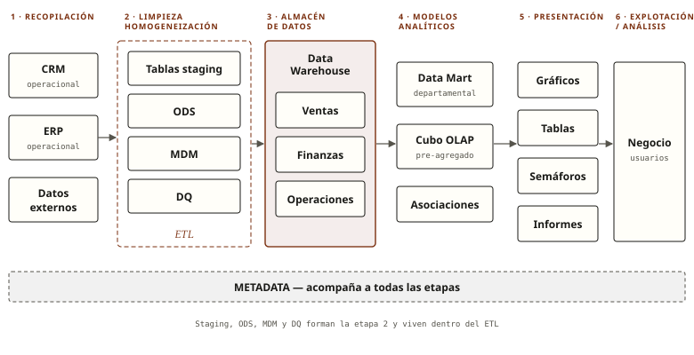

Lección 50 · Unidad 9 · Data warehouse
Los componentes de un Data Warehouse
Desde los sistemas de origen hasta el usuario de negocio, pasando por el ETL. Es el dibujo que pidió el modelo de parcial 1a: "Grafique los componentes genéricos de un DW".
Punto 1 del modelo bd parcial 1a: "Grafique los componentes genéricos de un
DW". Si el 2do parcial es choice, la forma será "¿cuál de estos NO es un componente?" o
"¿qué hace el ODS?", pero la figura de abajo cubre las dos formas. Dibujala una vez a mano.
01El esquema simple: tres bloques
El deck empieza con "DW — un esquema genérico y simple":
FUENTES ──► ETL ──► DW ◄── FRONT END
(varios Extracción Modelo de datos Aplicaciones analíticas
servidores) Limpieza Detalles / Análisis ad-hoc
Integración Agregaciones Gráficos · Tablas
Depuración Semáforos · Alertas
Transformación Queries ad-hoc
CargaETL son las siglas de Extracción, Transformación y Carga: el proceso que lleva los datos de las fuentes al DW. El deck lista seis tareas dentro de él: extracción, limpieza, integración, depuración, transformación y carga.
02Los componentes genéricos: seis etapas

| Etapa | Qué hay |
|---|---|
| 1 · Recopilación | Sistemas operacionales (CRM, ERP) y datos externos. |
| 2 · Limpieza / homogeneización | Tablas staging, ODS, MDM y DQ (todo bajo el ETL). |
| 3 · Almacén de datos | El DW, por áreas: ventas, finanzas, operaciones. |
| 4 · Modelos analíticos | Data marts, cubos OLAP, asociaciones. |
| 5 · Presentación | Gráficos, tablas, presentaciones, semáforos. |
| 6 · Explotación / análisis | El negocio: los usuarios. |
| Metadata | Acompaña a todo: describe los datos y los procesos. |
03MDM, ODS y DQ
El slide 28 define tres de las siglas de la etapa 2:
| Sigla | Significa | Qué hace, según el deck |
|---|---|---|
| MDM | Master Data Management, gestión de datos maestros | Procesos, políticas, servicios y tecnologías para gestionar, generar y mantener los datos asociados a las entidades de negocio centrales de la empresa. |
| ODS | Operational Data Store, almacén operacional de datos | Base de datos que se usa comúnmente como área lógica provisional para un almacén de datos. Ahí los datos pueden ser borrados, arreglados por redundancia y revisados para cumplir las reglas empresariales. |
| DQ | Data Quality, calidad de los datos | Conjunto de reglas que aseguran un mínimo de calidad de los datos recibidos, para que los resultados sean fiables. |
El staging (tablas o área de construcción) es donde caen los datos tal como llegan de las fuentes, antes de limpiarlos. Es la entrada del ETL.
04Data Warehouse contra Data Mart
Un Data Mart es un almacén más chico y focalizado, normalmente de un departamento. El deck los compara en cuatro cuadros:
| Data Warehouse | Data Mart | |
|---|---|---|
| Alcance | Corporativo; visión homogénea. Neutral a las aplicaciones, centralizado y compartido; cruza toda la empresa. | Departamental; visión parcial. Requerido por una aplicación específica, orientado a procesos de negocio; múltiples BD con datos redundantes. |
| Perspectiva de los datos | Detallados e históricos, poca sumarización, suavemente desnormalizado. | Detalle (algo de historia), sumarizado, fuertemente desnormalizado. |
| Temas | Múltiples áreas temáticas. | Única o múltiples áreas temáticas parciales; snapshot de fuentes operacionales. |
| Fuentes de datos | Muchas: operacionales y datos externos. | Pocas: operacionales, datos externos, snapshot de BD OLTP. |
| Tiempo de implementación | 9–18 meses para la 1.ª etapa (2 o 3 áreas temáticas); implementación en múltiples etapas. | 4 a 12 meses. |
| Características | Flexible, extensible; durable / estratégico; orientación a los datos. | Restrictivo, no extensible; corta vida / táctico; orientación al proyecto. |
05De dónde vienen los datos: CRM y ERP
Las fuentes del esquema son sistemas operacionales. Dos que nombra el deck:
- CRM (Customer Relationship Management): software que contiene toda la información de clientes, partners y stakeholders y la comparte con ventas, marketing, atención al cliente. Centraliza en una sola base todas las interacciones con los clientes; su objetivo es mejorar la satisfacción, la retención y el servicio.
- ERP (Enterprise Resource Planning): sistema de gestión de procesos organizacionales, sobre todo financieros (cuentas a pagar, emisión de facturas, planificación).
La diferencia que busca el deck: el CRM mira al cliente; el ERP, los procesos de la empresa. Ambos son OLTP: de ellos el ETL extrae para llenar el DW.
06Práctica
Un área lógica provisional donde los datos se borran, se arreglan por redundancia y se revisan contra las reglas del negocio antes de entrar al almacén. ¿Qué es?
Un repositorio departamental, de visión parcial, de corta vida y orientado al proyecto. ¿Qué es?
Entre DW y Data Mart, ¿cuál está fuertemente desnormalizado?
En los componentes genéricos del DW, ¿qué etapa va inmediatamente después del almacén de datos?
Deck raw/Intro Datawarehouse .pptx: slides 20 y 26–28 (esquema genérico,
componentes y definiciones de MDM, ODS y DQ), 36–38 (Data Warehouse contra Data Mart, tres
cuadros-imagen) y 39–43 (CRM y ERP). Modelo de parcial
raw/Material_Examen/bd parcial 1a.jpg, punto 1.
Soy tu profe acá. Dibujá a mano los componentes genéricos de un DW, sin mirar, y pasámelos. Te digo qué etapa o qué sigla falta.